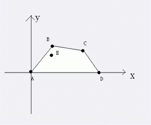
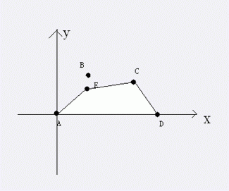

第一行，三个整数n,x,y分别表示河边城市和首都是(0,0)，(n,0)，(x,y)。
第二行，一个整数m。
接下来m行，每行两个整数a,b表示A国的一个非首都非河边城市的坐标为(a,b)。
再接下来一个整数q，表示修改和询问总数。
接下来q行每行要么形如1 i，要么形如2，分别表示撤销第i个城市的保护和询问。

上图中，A,B,C,D,E点为A国城市，且目前都要保护，那么修建的防线就会是A-B-C-D，花费也就是线段AB的长度+线段BC的长度+线段CD的长度,如果，这个时候撤销B点的保护，那么防线变成下图

对于每个询问输出1行，一个实数v，表示修建防线的花费，保留两位小数
4 2 1
2
1 2
3 2
5
2
1 1
2
1 2
2
6.47
5.84
4.47